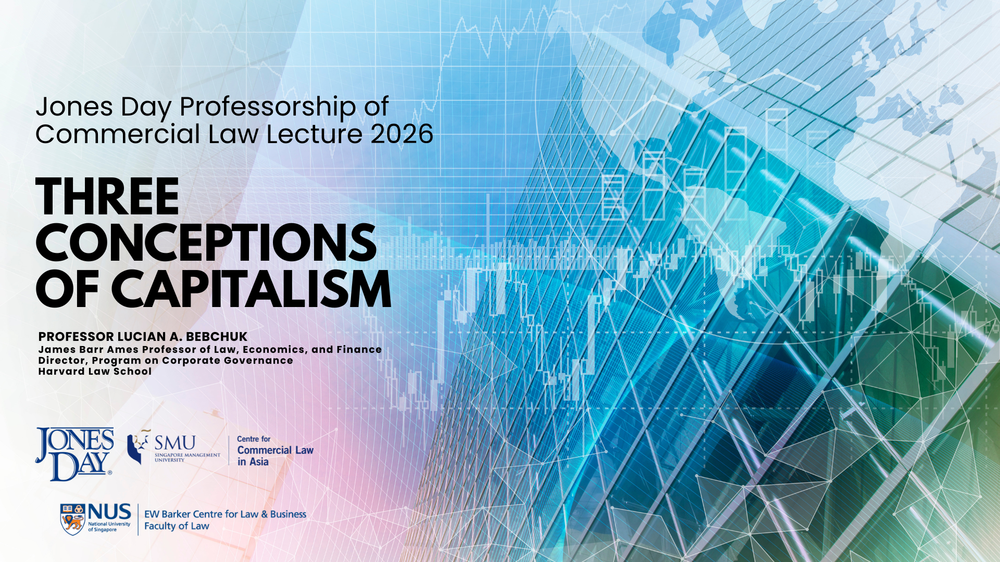
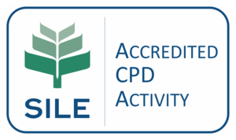

How should we make capitalism work best for society? To this end, what goals should corporate leaders, public officials, and citizens pursue? This lecture seeks to contribute to the long-standing debates on these questions.
In the lecture, Professor Lucian A. Bebchuk will examine three rival conceptions that have had substantial traction in the “real world” of politics and business – those of
Friedmanesque Capitalism, which supports a corporate maximization of shareholder profits and a limited role for the government,
Managerial Stakeholderism, which advocates encouraging and relying on corporate leaders to use their discretion to serve also stakeholders not only shareholders but, and
Democratic Capitalism, which is deeply concerned about corporate externalities but seeks to address them through external governmental interventions and limiting corporate leaders’ ability to impede such interventions.
The lecture considers what each framework implies for citizens and voters, institutional investors, and policymakers, and how corporate governance debates intersect with broader questions of legitimacy, enforcement, and democratic choice.
Professor Bebchuk will also be commenting on attempts based on harnessing the power of investors, power, using pressures from customers and employees, introducing stakeholder-oriented directors, and requiring corporate leaders to make stakeholder-oriented decisions, explaining why those favoring Democratic Capitalism over Managerial Stakeholderism should not switch to any of these versions of Nonmanagerial Stakeholderism.
Professor Lucian A. Bebchuk
James Barr Ames Professor of Law, Economics, and Finance
Director, Program on Corporate Governance
Harvard Law School
Date: 8 June 2026, Monday
Time: 5:00pm to 6:45pm (Singapore time)
Format: In-person
Fee: Complimentary
Venue: Swissôtel The Stamford, Singapore
Atrium Ballroom, Level 4
2 Stamford Rd, Singapore 178882
Registration closes on 25 May 2026, 5pm (SGT) or when maximum capacity is reached, whichever earlier

Public CPD Points: 1.5 (TBC)
Practice Area: Corporate / Commercial
Training Category: General
Participants who wish to obtain CPD Points are reminded that they must comply strictly with the Attendance Policy set out in the CPD Guidelines. For this activity, this includes signing in on arrival and signing out at the conclusion of the activity in the manner required by the organiser, and not being absent from the entire activity for more than 15 minutes. Participants who do not comply with the Attendance Policy will not be able to obtain CPD Points for attending the activity. Please refer to http://www.sileCPDcentre.sg for more information.
The Jones Day Professorship of Commercial Law was established in 2012, made possible by the global law firm Jones Day, which generously endowed the largest ever contribution by any law firm to SMU through the Jones Day Foundation. It will facilitate increased focus on the development of Commercial Law in Singapore, a market which is in continuous development and increasingly plays a global role as a hub for legal services to both regional and international clients in Asia.